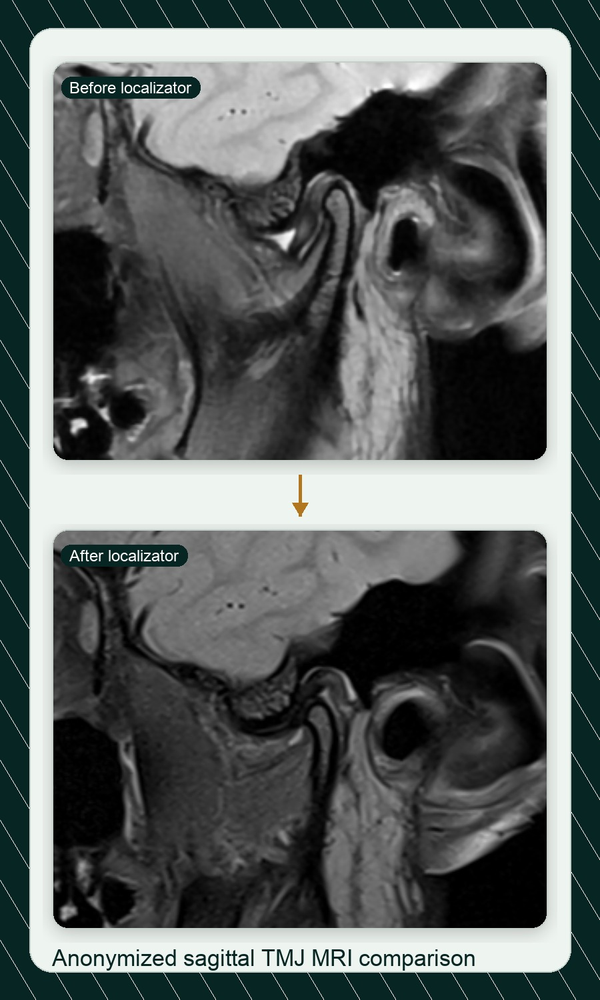
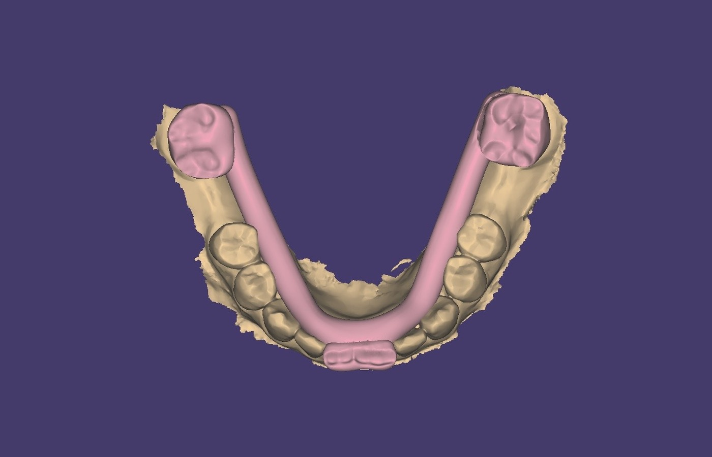

Pianificazione della posizione mandibolare guidata dall'articolazione per casi restaurativi, ortodontici e di riabilitazione dell'intera bocca sensibili all'ATM selezionati dal medico.
AxisGuide è un flusso di lavoro di pianificazione digitale a fasi che utilizza la misurazione MRI della quantità e della direzione dello spostamento del disco, CBCT e scansioni intraorali per simulare una posizione mandibolare proposta. Viene progettato un localizzatore stampato in 3D dallo spazio interarcata in quella posizione, in modo che il medico possa esaminare la risposta articolare, la relazione disco-condilo e la risposta ai sintomi prima di provare la ricostruzione occlusale provvisoria.
Simulazione vettoriale condilareSimulazione del cranio e della dentatura
Stecche e deprogrammatori
Elettrodomestico CAD
Per richieste semplici di splint o apparecchi funzionali in cui la posizione del morso è già definita dal medico.
Uscita tipica
Stecche Michigan, deprogrammatori, stecche di stabilizzazione, protezioni notturne, rampe per morsi e file di produzione.
AxisGuide
Pianificazione congiunta-posizione-prima
Per casi complessi in cui è necessario valutare la posizione mandibolare prima della ricostruzione ortodontica o restaurativa.
Uscita tipica
Revisione del vettore di spostamento MRI, simulazione del movimento mandibolare, progettazione del localizzatore stampato in 3D, riferimenti di verifica, configurazione occlusale provvisoria e riferimenti di ricostruzione ortodontica o restaurativa.
Logica della tecnica
Pensiero guidato da MRI, tradotto in un flusso di lavoro digitale collaborativo.
Il flusso di lavoro non inizia da un morso convenzionale. Le misurazioni MRI definiscono il vettore di spostamento del disco, il movimento mandibolare viene simulato digitalmente e un localizzatore stampato riporta la posizione proposta per il sintomo guidato dal medico e la verifica MRI prima che venga provata una ricostruzione occlusale provvisoria.

01
Registra l'integrazione
MRI, CBCT, scansioni intraorali, sintomi clinici, foto e obiettivi riabilitativi sono allineati in un unico contesto di pianificazione.
02
Misura vettoriale MRI
La quantità e la direzione dello spostamento del disco vengono misurate da MRI e tradotte in un vettore di pianificazione per la posizione mandibolare proposta.
03
Simulazione del movimento mandibolare
La mandibola viene simulata nella posizione proposta, con lo spazio interarcata, i riferimenti condilari e lo spazio occlusale rivisti digitalmente.
04
Verifica del localizzatore
Un localizzatore stampato in 3D è progettato da quello spazio interarcata in modo che il medico possa controllare la relazione disco-condilo, la verifica MRI e i sintomi.
05
Prova occlusale provvisoria
Se la verifica è stabile, i denti provvisori o una ricostruzione occlusale temporanea possono testare i contatti MIP, l'occlusione dinamica, la guida canina e la guida anteriore.
06
Ricostruzione ortodontica o restaurativa
La posizione verificata può quindi guidare la ricostruzione occlusale ortodontica, la ricostruzione restaurativa definitiva o una sequenza di trattamento combinato.

Dettaglio localizzatore CAD
Lo spazio interarcata pianificato viene tradotto in un supporto di posizione progettato da CAD per la verifica clinica, non in una stecca generica.
Registrazione digitale della posizione
La posizione mandibolare proposta viene documentata rispetto ai riferimenti del cranio, alle scansioni intraorali e ai riferimenti condilari prima che venga fabbricato il localizzatore.
Prova occlusale provvisoria
La configurazione provvisoria può essere rivista rispetto ai contatti statici MIP pianificati prima che l'occlusione dinamica, la guida canina e la guida anteriore vengano perfezionate.
Casi più adatti
Riabilitazione completa della bocca in cui il morso iniziale è inaffidabile
Casi ortodontico-restaurativi che richiedono coordinazione della posizione mandibolare
Casi di ATM selezionati dal medico con apertura limitata, dolore articolare, suoni articolari o deviazione all'apertura
Asimmetria facciale, deviazione mandibolare o retrusione mandibolare che richiedono una pianificazione interdisciplinare
Casi sensibili dell'ATM in cui i medici necessitano di supporto per la pianificazione basato sull'imaging
Risultati finali della pianificazione
Registrare la lista di controllo e la revisione della preparazione del caso
Riferimenti per la pianificazione del vettore di spostamento MRI
Simulazione digitale del movimento mandibolare
Supporto per localizzatore CAD stampato in 3D
Riferimenti per la ricostruzione occlusale provvisoria
Supporto per il sequenziamento della ricostruzione ortodontica o restaurativa
Confine clinico
La diagnosi e le decisioni terapeutiche restano di competenza del medico
La pianificazione e la verifica vengono riviste caso per caso con l'équipe curante
La relazione disco-condilo, i sintomi e i risultati dell'imaging vengono verificati clinicamente quando indicato
Giunti degenerati o condizioni del disco non riducibile richiedono un'attenta selezione dei casi
Il sequenziamento ortodontico o restaurativo definitivo rimane gestito dal medico
Nota di posizionamentoAxisGuide è un servizio avanzato di pianificazione e collaborazione digitale. Supporta la revisione professionale e la pianificazione del trattamento mentre la diagnosi, la selezione della terapia e la valutazione dei risultati rimangono sotto il controllo del medico.
Discuti un caso AxisGuideCondividi in forma anonima l'ATM MRI, CBCT/DICOM, le scansioni intraorali, i record attuali della posizione mandibolare e l'obiettivo della riabilitazione in modo che l'ambito possa essere rivisto prima del preventivo.